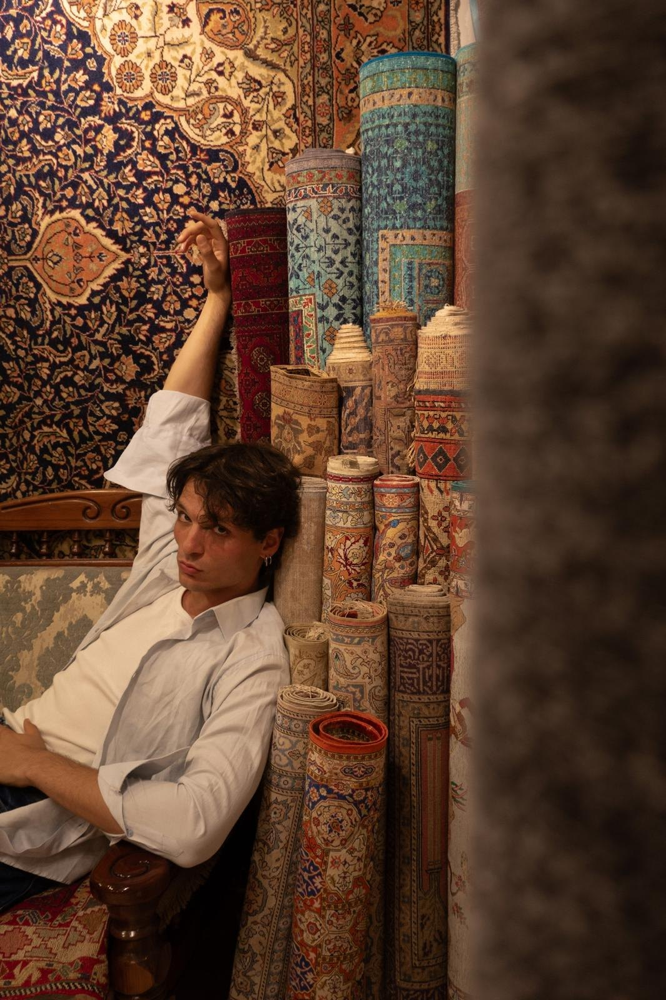

A family,
and its rugs.
We have never been a brand that discovered rugs. We are a family that grew up among them.
Professio is Latin for a declaration, a public promise. Ours is simple: every rug we place is handmade, honestly described, and worthy of being kept for generations.
Raised among the stacks
Our earliest memories smell of wool and dust and cedar. Rolled rugs taller than we were. Afternoons spent learning to turn a corner back and count the knots.
The business has always belonged to the family. We buy from the weavers and workshops we know by name, we keep pieces in our own archive, and the person who answers your enquiry is the same person who unrolled the rug and checked every knot of it.
That closeness is our whole method. It is why we can tell you which piece is pure silk and which is not, which is new and which has lived a life, and why we put our name to a certificate for every one.

From the loom to your hands, with nothing in between
The Weaver
Master artisans and family workshops who have tied the same knots for generations. We work with them directly and pay them fairly for months of work.
The House
We select, examine and document every piece, keep it in our archive, and stand behind it with a signed certificate of handmade authenticity.
The Custodian
Private collectors and international trade clients, from a single apartment to a hotel lobby, receive the piece with its full story attached.

"Every knot is a decision someone made by hand. We think you should know whose hands."
The Professio family
The Certificate of Authenticity
Each rug leaves us with a certificate, signed by the family and issued in the name of its new custodian, affirming that it is handmade.
It records our promise and travels with the piece: to your heirs, to an insurer, to a future collector. If you are ever unsure about a Professio rug, write to us and we will confirm it from our records.
Discover the CollectionPrivate viewings in person or by video, for one piece or a hundred.